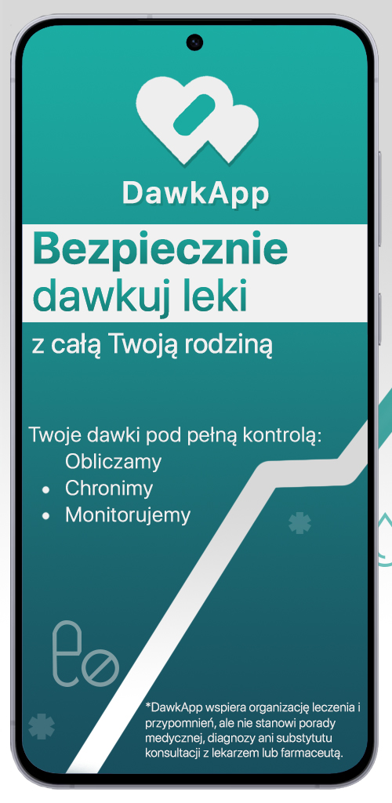
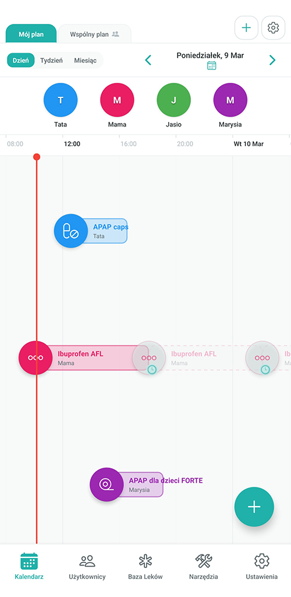
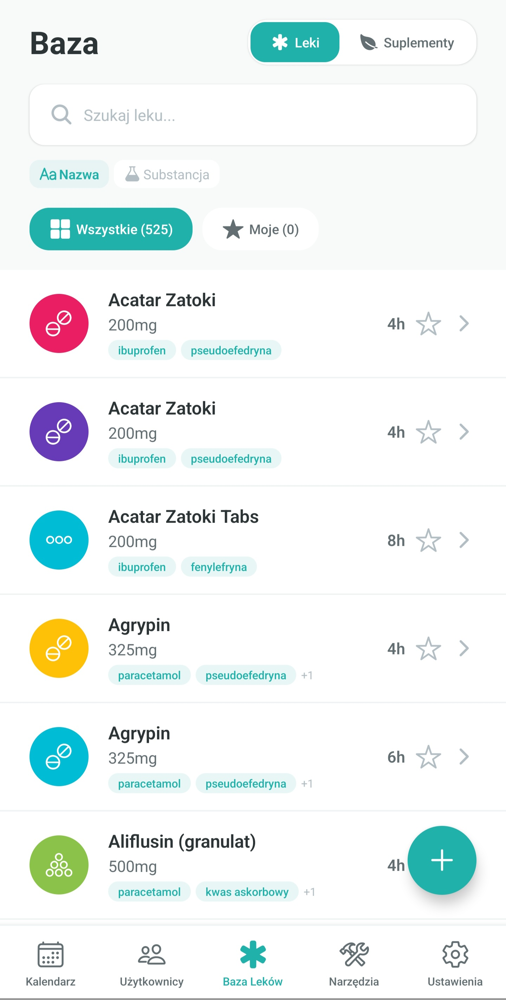

Monitoruj dla całej rodziny
Monitoruj i kontroluj dawkowanie dla członków rodziny.

*DawkApp wspiera organizację leczenia i przypomnień, ale nie stanowi porady medycznej, diagnozy ani substytutu konsultacji z lekarzem lub farmaceutą.
Monitoruj i kontroluj dawkowanie dla członków rodziny.
Zapisywanie szczegółowej historii dawkowania i możliwość eksportowania w postaci raportów dla lekarzy.


Zaawansowane obliczenia na podstawie masy, wieku i dolegliwości przewlekłych.